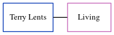

David Simmerman
[ Home ] | [ Calendar ] | [ Surnames Index ] | [ Errors ] | [ Family History ]The child of Dora Simmerman and Katherine Bixler, David Simmerman was the sixth cousin on the mother's side of Nigel Horne.
Parents
- Dora Forest was born on 11 Mar 1922
- Katherine was born on 15 May 1928
Family Tree
Generated by ged2site. Last updated on Jul 3, 2024